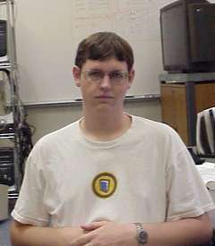
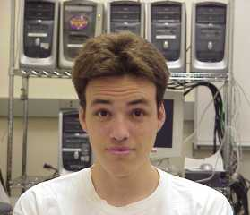
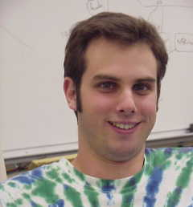
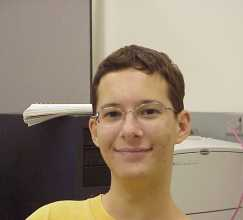
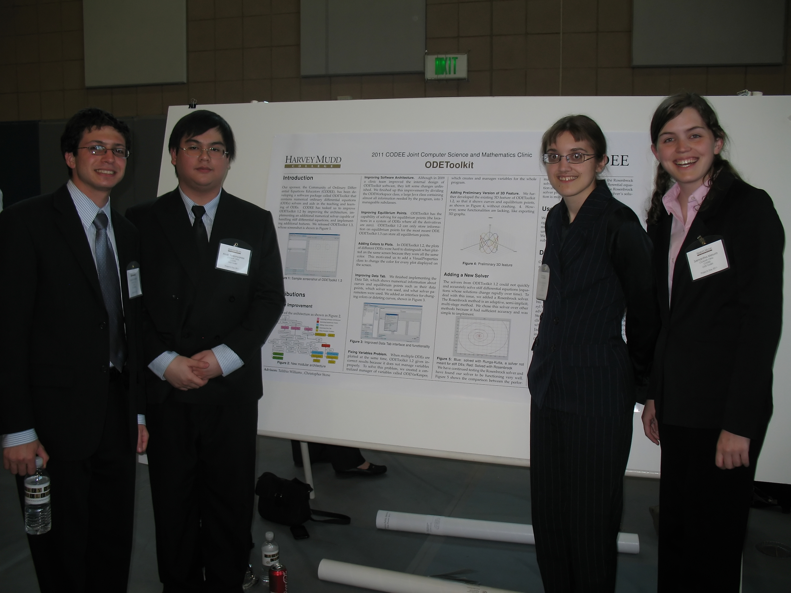

History and Acknowledgements
Last Updated on Sept 20, 2013Phase 1
The original software for interfacing LSODA was developed at HMC by students: Kevin Carosso, Ned Freed, Kristin Hubner and Dan Newman.Phase 2
The original interface software was made user friendly at HMC and named "ODEToolkit" by students: Anthony Leneis and David Richards.Phase 3
Professor Joseph Fehribach at WPI obtained a grant from Digital Equipment Corporation (now Compaq Corporation) to support teams of students at WPI and HMC to work jointly to implement the first version of ODEToolkit on the World Wide Web. The WPI students were: Richard Demar, Adam Howes, Michael Kingsbury, and Adriano Palombizio.Phase 4
The fourth generation of ODEToolkit was developed at HMC, supported in part by an Andrew W. Mellon Foundation grant to HMC and in part by the Mathematics Clinic at HMC. The manager of the ODEToolkit project was Professor Michael Raugh, with web consulting from Professor Francis Su. The student contributors were: Mark Dean, Stephen Haas, Ben Hulse, John Kodumal, Colin Little, Cameron McLeman, Jascha Swisher, Bryan Tysinger, Andy Walther, Kevin Wong, and Carl YuPhase 5
The fifth generation of ODE Toolkit was redesigned and rewritten from the ground up. It was developed with guidence from Professors Robert Borrelli, Courtney Coleman, and Michael Raugh of Harvey Mudd College and funded by the HMC Math Clinic program. The student authors are: Aaron Becker (HMC '04, CS/Math Major)

Ken Dye (HMC '04, CS/Engineering Major)

Eric Harley (HMC '04, Math Major)

Chris Moore (HMC '05, Physics Major)
Phase 6
The sixth generation of ODE Toolkit was redesigned and more thoroughly documented. It was developed with guidence from Professors Chris Stone and Darryl Yong of Harvey Mudd College as a Joint Math/CS clinic. The student authors are:Eric Doi (HMC '09, CS Major)
Andres Perez (HMC '10, Joint Math/CS Major)
Richard Mehlinger (HMC '09, CS Major)
Steven Ehrlich (HMC '09 Joint Math/CS Major)
Note: The LSODA and CVODE solvers were written at Lawrence Livermore National Laboratories. LSODA was developed by Alan Hindmarsh and Linda Petzold, and CVODE was devloped by Peter Brown, Keith Grant, Alan Hindmarsh, Steve Lee, Radu Serban, Dan Shumaker, Allan Taylor, and Carol Woodward.
Phase 7
The seventh generation of ODE Toolkit had some new features added and was even more thoroughly documented. It was developed with guidence from Professors Talithia Williams, Chris Stone, Darryl Yong, and Robert Borrelli of Harvey Mudd College as a Joint Math/CS clinic. The student authors are:Beky Kotcon (HMC '11, CS Major)
Anak Yodpinyanee (HMC '12, Math/CS Double Major)
Samantha Mesuro (HMC '11, Math Major)
Daniel Rozenfeld (HMC '11 Math Major)

From left to Right: Daniel, Anak, Beky, Samantha